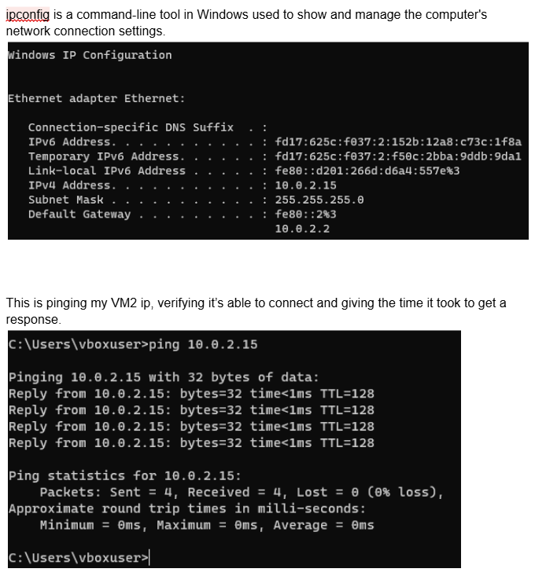
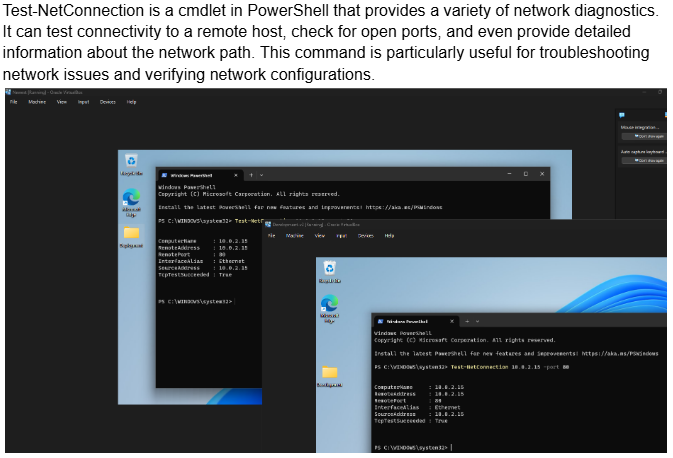
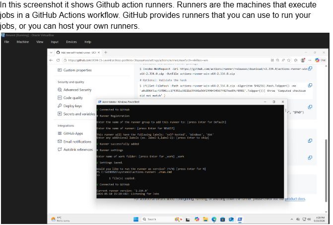
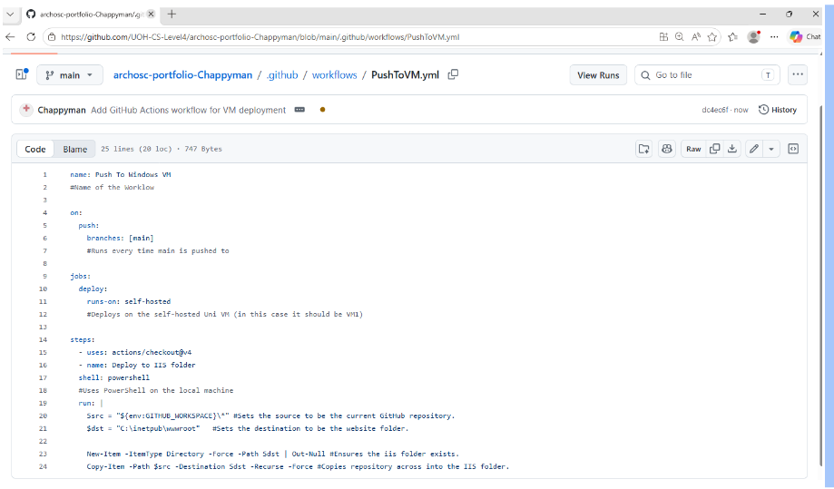

This portfolio contains screenshots and definitions for all of the tasks I have completed in my lab.
Lab 6 focused on memory management concepts used in operating systems, including virtual memory, paging, page tables, and translation lookaside buffers (TLBs). Tasks involved calculating virtual and physical addresses, understanding how memory is mapped, and identifying page faults. C# was also used to simulate TLB behaviour by tracking hits and misses during address translation. The lab finished with memory interfacing tasks, where decoders and memory addressing were explored to understand how processors communicate with memory hardware.



